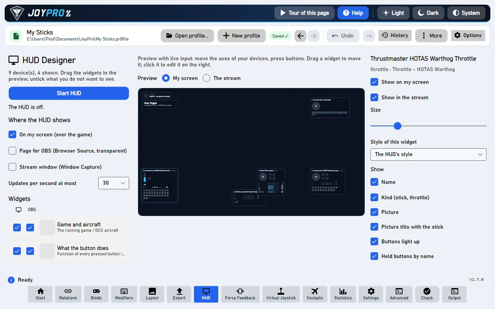

#オーバーレイを切り替え
ボタン説明済み「HUD 開始」/「HUD 停止」: 上でチェックした出力で HUD を開始します。必要ならデバイスを読み込み、実行中のゲームを見つけ、その割り当てを読み込みます。
もう一度押すと、すべての出力を閉じます。
HUD は、配信者のコントローラー オーバーレイのように、プレイ中にデバイスを画面に表示します。スティックの画像はスティックに合わせて傾き、レバーや軸はバーとして動き、押しているボタンは名前付きで光り、実行中のゲームで押したボタンが何をするかを 1 行で表示します（"Gear Toggle"）。ゲームの上、OBS、またはその両方に、それぞれ独自のウィジェットで表示できます。このページはそのデザイナーです。


flowchart LR D["デバイス"] --> P["HUD"] O["ゲーム内での<br/>割り当て"] --> P P --> S["自分の画面"] P --> B["OBS 用ページ"] P --> W["配信用ウィンドウ"]
HUD 停止（同じボタン）で閉じます。ここでの設定はすべて保存され、再起動の後も残ります。
プレビューでウィジェットをドラッグすると移動できます。クリックすると、右側で変更できます。自動で配置 を押すと、下に沿って並べます：スロットルと左手のデバイスは左、ペダルは中央、右手のスティックは右。


HUD ウィンドウは透明で、ウィンドウ モードとボーダーレスのゲームの上に表示され続けます。クリックはウィンドウを素通りしてゲームに届きます。タスク バーや Alt+Tab には表示されません。排他的フルスクリーンでは隠れてしまいます（Windows の制限）。ゲームをボーダーレスに切り替えてください。押したボタンの行には、そのゲームと機体のアクション名が表示されます。例：F-16C では "Weapon Release"、IL-2 では "Fire guns"。
3 つの出力は互いに独立しています：
| 出力 | 対象 | 方法 |
|---|---|---|
| 自分の画面（ゲームの上） | 自分 | ゲームの上に重なる透明なウィンドウ |
| OBS 用ページ（ブラウザソース、透明） | 配信（推奨） | JoyPro がこの PC 専用のページを提供します。コピー でそのアドレスをクリップボードに入れます |
| 配信用ウィンドウ（ウィンドウ キャプチャ） | ウィンドウキャプチャで配信する場合 | 透明またはクロマキーの背景を持つ通常のウィンドウ（ゲームの後ろにあっても可） |
自分の画面 のチェックを外すと、配信には HUD を表示したまま、すっきりした画面でプレイできます。それぞれに別のウィジェットを表示することもできます。どのウィジェットにも、モニター（自分の画面）と OBS（配信）の 2 つのチェックがあります。プレビュー: 自分の画面 / 配信 で、デザイナーに表示する内容を切り替えます。1 秒あたりの最大更新回数（15、30、60。30 で滑らかかつ軽量です）。
http://127.0.0.1:8765/hud）の横の コピー を押します。このページは、配信用にチェックしたウィジェットを、アプリと同じ位置とスタイルで、ソースに合わせて拡大縮小される 1920 x 1080 のステージに描きます。ポートがほかのプログラムに使われている場合は、ポート で別のポートを選び、アドレスをもう一度コピーします。


ウィンドウキャプチャを使う場合：配信用ウィンドウ にチェックを入れ、背景（透明、緑、マゼンタ、青、または好きな色）を選びます。OBS で Window Capture を Capture Method: Windows 10 (1903 and up) で追加します。色を使う場合は、その色の Chroma Key フィルターを追加します。OBS で透明な背景が黒く表示される場合は、ブラウザソースか色付きの背景を使ってください。
OBS のブラウザソースが HUD を受け取る仕組み：最初に 1 ページ、その後は変更だけ。
| # | 誰が | どうなるか |
|---|---|---|
| 1 | OBS | ブラウザソースが http://127.0.0.1:8765/hud を開きます。 |
| 2 | JoyPro | ページを送ります：レイアウト、スタイル、画像。 |
| 3 | OBS | /hud/events を開きます。開いたままになります。 |
| 4 | JoyPro | 状態（軸、ボタン、ボタンの機能）を送ります。最大で 1 秒に 30 回、何かが変わったときだけです。 |
| 5 | JoyPro | ウィジェット、配置、スタイルが変わると、レイアウトをもう一度送ります。 |
ウィジェット には、すべてのデバイスとヘッダー、割り当てティッカー、機体ウィジェットが並びます。デバイスを再読み込み は接続中のデバイスを読み直し、すべて表示 は自分の画面用にすべてのウィジェットにチェックを入れ、自動で配置 と 位置をリセット はウィジェットを配置します。
ウィジェットごと（プレビューか一覧でクリック）：


機体ウィジェット：スティック、スロットル、スロットルの可動バー、スティックの位置、点灯する操作部、操作中の操作部の名前。機体（自動：飛行中の機体、またはこの PC で設定した任意の画像）と 連動先（動かすスティックとスロットル）。画像はゲーム自身のコックピット画像（コックピット > ゲームから画像を作成、または画像パック）から取り、なければ実物のグリップを描いた JoyPro の線画を使います。
スタイル には 40 のプリセットがあります：ガラス、ネオン、ミニマル、すっきり系（すりガラス (ライト)、ストリーマー シンプル、ストリーマー ボールド、コンパクト、大きな文字、パステル、輪郭のみ）、コックピットの表示器（ミリタリー グリーン HUD、アンバー MFD、旅客機 PFD、グラス コックピット、暗視、赤色コックピット照明、ベクター ワイヤーフレーム、レトロ ターミナル、ウォーバード、ホログラム）、ゲームとジャンル（宇宙シム オレンジ、ホロ シアン、サイバーパンク、シンセウェイブ、ネオン ピンク、レーシング、タクティカル タン、ネイビー & ゴールド、ステルス、ゴースト）、カラーテーマ（北極、砂漠、海洋、夕焼け、ロイヤル、カーボン）、読みやすさ（ハイコントラスト、ハイコントラスト (ライト)、モノクロ、モノクロ (ライト)）。› で次のスタイルに進みます。


その下には、ワンクリックで選べるアクセントカラー、アクセント、押下時、不透明度、そして要素ごとのデザインオプションがあります：カード（背景、枠線、角、影）、テキスト（フォント、サイズ、字間、色、名前を太字）、スティック表示（リング、四角、十字線、レーダー、点。サイズ、光彩）、バーとレバー（形、高さ、空の部分）、ボタンとチップ（形）。オプションを変えると、スタイルは「独自デザイン（変更あり）」になります。スタイルを保存 で自分の名前を付けて保存し、変更を元に戻す でプリセットに戻り、スタイルをエクスポート... / スタイルをインポート... でファイルとして共有し、削除 で自分のスタイルを削除します。
ボタンの機能：表示する行数、表示しておく時間（秒）、フォントサイズ、デバイスとボタンを表示、ゲームの実行中のみ。クリック透過 は、マウスのクリックを HUD のウィンドウの下に通します（HUD の開始時に適用）。
JoyPro は実行中のゲームをプロセスから見つけ（DCS、IL-2、Star Citizen など、扱うすべてのゲーム）、そのゲームの割り当てだけを表示します。DCS では機体も必要です。DCS 機体 で選ぶか、DCS フックをインストール して、ミッション開始のたびに DCS から JoyPro に機体を知らせるようにします（小さな Lua ファイルと、Export.lua 内の保護された 1 行。先にバックアップを取ります。削除 でファイルを 1 バイトも違わず元に戻します。先に DCS を閉じてください）。確認 で、フックがインストールされているかどうかがわかります。


ビューモデル：MainWindowViewModel.Hud.cs（デバイス、ウィジェット、配置）、MainWindowViewModel.HudStyles.cs（プリセット、独自のスタイル、インポート/エクスポート）、MainWindowViewModel.HudStream.cs（出力、配信用ページ、機体ウィジェット）、MainWindowViewModel.HudAxes.cs（スティックの軸）、MainWindowViewModel.Overlay.cs（開始/停止、実行中のゲーム、ボタンの行、DCS フック）。ビュー：Views/HudWindow.axaml、Views/Controls/HudSurface.axaml、HudElements.cs、HudPanel.cs。プリセット：Models/HudStylePresets.cs。
engine hud devices は、接続中の各デバイスについて、モデル、種類、使う手、製品画像、役割付きの軸、名前と操作 ID 付きのボタン（Controls、機体ウィジェット用）、ボタン位置付きのレイアウト画像を返します。engine overlay map（--game、--plane、--unit）：モディファイアと名称付きの割り当て済みボタン。モディファイア付きの割り当ては、そのモディファイアを押している間に表示されます。一致するモディファイアが最も多い割り当てが優先されます。engine overlay dcs-hook status / install / remove（--path、--dry-run）：Scripts\JoyProOverlay.lua と、Export.lua 内の pcall で囲んだ 1 行。DCS はユニットの種類を 127.0.0.1:1992（UDP）に送ります。フックは、置き換えたほかのスクリプト（SRS、Tacview）のエクスポート関数も呼び出します。Services/HudStreamServer.cs、HudStreamHub.cs、Resources/hud-stream.html。127.0.0.1 だけにバインドされ、別のホスト名でのリクエストは拒否されます。GET /hud（ページ）、/hud/events（Server-Sent Events：layout、state）、/hud/img/<id>（PNG の画像）、/hud/state（JSON）。接続しているページがなければ待ち受けるだけです。Services/HudInputPump.cs はデバイスごとに最新のレポートだけを残し、選んだレートで適用します。要素は変化があったときだけ再描画され、レポートごとのメモリ確保はなく、画像の切り抜きは 1 回だけです（機体のグリップは高さ 480 px）。HUD の長時間テストで、CPU、メモリ確保、メモリの上限に対して測定しています。%APPDATA%\JoyPro2\hud.json（位置、サイズ、ウィジェットごとの画面用・配信用のチェック、すべてのオプションを含むスタイル、独自のスタイル、出力、ポート、背景、更新レート）。スタイルファイル：*.joypro-hudstyle.json（"format": "joypro-hud-style"）。リファレンス：hud。
このページの元になった機能ドキュメント（リポジトリから生成）：
プログラムのソースから読み取った 42 個のコントロール：説明済み 42、ソースの情報（ツールチップ、コード コメント、エンジン呼び出し）付き 0、今後拡充 0。
「HUD 開始」/「HUD 停止」: 上でチェックした出力で HUD を開始します。必要ならデバイスを読み込み、実行中のゲームを見つけ、その割り当てを読み込みます。
もう一度押すと、すべての出力を閉じます。
ツールチップ ゲームの上に表示される透明な HUD です。チェックを外すと、配信には HUD を表示したまま自分の画面をすっきり保てます。
ツールチップ JoyPro は HUD を Web ページとしてこの PC 内だけで提供します。OBS でこのアドレスのブラウザソースを追加してください。背景は透明なので、カスタム CSS は不要です。
HUD の実行中、JoyPro は OBS のブラウザ ソース用に、この PC 上だけで HUD を Web ページとして提供します。背景は透明で、カスタム CSS はありません。
チェックすると、アドレスと「コピー」、「ポート」が下に表示されます。
ツールチップ 独立したウィンドウで、最前面には表示されません。ゲームの後ろにあってもかまいません。OBS で: キャプチャ方法 Windows 10 (1903 以降) のウィンドウ キャプチャを使用します。クロマキー色を使う場合はクロマキー フィルタを追加してください。
HUD の実行中、OBS のウィンドウ キャプチャ用に専用のウィンドウを開きます。背景は透明か、下で選んだクロマキーの色です。
OBS で: キャプチャ方法を Windows 10 にし、色を使う場合はクロマキー フィルターを追加します。
リスト内のウィジェットのモニター チェック: 自分の画面に表示します。
リスト内のウィジェットの OBS チェック: 配信に表示します。
画面用のすべてのウィジェットにチェックを入れます。不要なものはリストでチェックを外してください。
ツールチップ 下部に沿って、スロットルと左手用を左、ペダルを中央、右手用スティックを右に配置します
画面に表示されるデバイス ウィジェットを下部に並べます。スロットルと左手のデバイスは左、ペダルは中央、右手のスティックは右です。収まらないものは 1 段上に置かれます。
新しい配置は保持されます。
すべてのウィジェットを既定の位置とサイズに戻します。各ウィジェットに表示される内容はそのままです。
ツールチップ 次のスタイル
HUD を「スタイル」リストの次の項目に切り替えます。
スタイルにこのアクセント カラーを設定します。HUD はすぐに反映し、保存するまでスタイルは「独自デザイン」と表示されます。
ウィジェットの名前を太字で表示します。スタイルの一部なので、保存するまで「独自デザイン」に変わります。
現在のデザインを、共有や保管用のスタイル ファイルとして保存します。HUD は変わりません。
ツールチップ 上で選んだスタイルに戻す
デザインを、手動で変更する前のスタイル（最後に選んだ、保存した、またはインポートしたスタイル）に戻します。
選んだ自作スタイルを削除します。それを使っていたウィジェットは HUD のスタイルに戻ります。HUD は現在の見た目を保ちます。
「ボタンの機能」の各行の下に、デバイスとボタンを追加します。
「ボタンの機能」の行を、対応ゲームの実行中だけ表示します。オフの場合はデスクトップでも表示されます。
「自分の画面」/「配信」: デザイナーのプレビューに表示する内容です。画面用にチェックしたウィジェット、または配信用にチェックしたウィジェットです。
変わるのはプレビューだけです。選択は次回の起動時にも保持されます。
選択中のウィジェットを自分の画面に表示します。
選択中のウィジェットを配信（OBS ページと配信用ウィンドウ）に表示します。
デバイスの名前をウィジェットに表示します。
ゲーム ヘッダー ウィジェット: ゲームまたは DCS 機体の画像をその名前の横に表示します。
デバイスの種類を名前の下に表示します。
デバイスの画像を表示します。
実物のスティックが動いているように、デバイスの画像をスティックに合わせて傾けたりひねったりします。
デバイス ウィジェット: 押しているボタンが点灯します。機体ウィジェット: 押したボタンに対応する機体の操作部が、そのスティックまたはスロットル上で点灯します。
各軸の名前をバーの横に表示します。
各軸の値をバーの横に表示します。
スティックの要素を表示します。スティックの位置を示すリング内の点と、ひねりを示す目盛りです。
ハットを表示します。押した方向が点灯します。
機体ウィジェット: 機体自身のスティックの画像を表示し、あなたのスティックに合わせて傾けます。
機体ウィジェット: 機体自身のスロットルの画像を表示し、あなたのスロットルの 1 本目のレバーに合わせてスライドさせます。